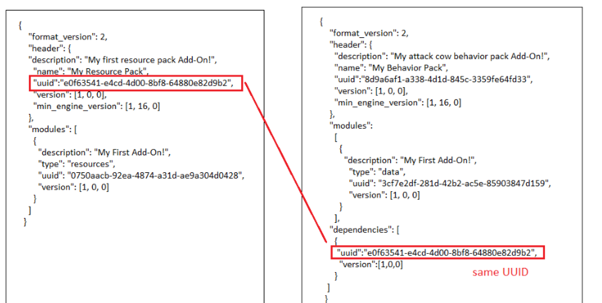

El archivo de manifiesto
contiene toda la información básica sobre
el paquete que Minecraft
necesita para identificarlo.
Las siguientes tablas contienen
todos los componentes del manifiesto,
sus propiedades individuales y lo que significan.
-Crea una carpeta
1-En esta sección, crearás una carpeta llamada My_BEHAVIOR_Pack.
Bueno, en verdad no tienes que llamarla así.
De hecho, puedes darle el nombre que quieras,
pero las otras deben tener exactamente el mismo
nombre que figura en este tutorial para que
Minecraft sepa dónde buscarlas.
2-Abre la carpeta com.mojang.
3-Abre la carpeta development_behavior_packs.
4-Dentro de la carpeta development_behavior_packs,
crea una carpeta nueva y llámala My_BEHAVIOR_Pack.
5-Abre la carpeta My_BEHAVIOR_Pack

Crea el archivo de manifiesto
Para cargar un pack de comportamiento en Minecraft,
tendrás que crear un archivo de manifiesto.
El archivo de manifiesto del pack de comportamiento
es similar al creado para el pack de recursos,
pero tiene dos secciones adicionales.
modules: define el pack para que Minecraft
sepa cómo aplicarlo en el mundo.
Los packs de comportamiento usan el tipo data.
dependencies: crea un vínculo entre los packs de comportamiento y
los packs de recursos para agregar texturas y
elementos visuales personalizados en Minecraft.
Crea un documento nuevo en tu carpeta My_BEHAVIOR_Pack y llámalo manifest.json.
Deberás cambiar la extensión del
archivo de .txt a .json.
Si en la ventana del Explorador no se
muestran las extensiones de nombre de archivo,
puedes habilitarlas en la pestaña Ver.

Introduce UUID
Al igual que en el archivo de manifiesto
del pack de recursos, tendrás que
generar dos UUID diferentes para las secciones
del encabezado y del módulo de tu
archivo de manifiesto.
Puedes usar un generador de UUID
online como https://www.uuidgenerator.net
Copia y pega un UUID en la sección de encabezado.
Deberás pegar el UUID en el campo
"uuid" entre las comillas ("")
para que se lea correctamente.
Actualiza la página web para
generar un UUID nuevo que podrás usar
en la sección de módulos.
Copia y pega el UUID nuevo en la sección de módulos,
en el campo "uuid" entre las comillas.

Crea la dependencia
Hay una tercera sección en el archivo manifest.json
del pack de comportamiento llamada
"dependencias" que se usa para crear un
vínculo entre un pack de recursos y un
pack de comportamiento.
Este vínculo se crea cuando el UUID
ubicado en la sección de encabezado del
archivo manifest.json del pack de recursos
es el mismo que el UUID en la sección
de dependencias del archivo manifest.json
del pack de comportamiento.
No necesitas tener un pack de recursos
para usar un pack de comportamiento y viceversa.
Si cuentas con ambos, puedes usar
esta solución para vincularlos.
De este modo, cuando cargues un pack
de comportamiento en un mundo,
automáticamente se cargará y activará
el pack de recursos vinculado con él.

Abre el archivo manifest.json
ubicado en la carpeta My_RESOURCE_Pack
dentro de la carpeta development_resource_packs.
Copia el UUID de la sección de header
del archivo manifest.json del
pack de recursos.
Ve al archivo manifest.json ubicado
en la carpeta *My_BEHAVIOR_Pack dentro
de la carpeta development_behavior_packs.
Pega el UUID en el campo "uuid"
en la sección de dependencias.
Asegúrate de que todo el texto
entre comillas coincida exactamente.
Guarda el archivo manifest.json
del pack de comportamiento.